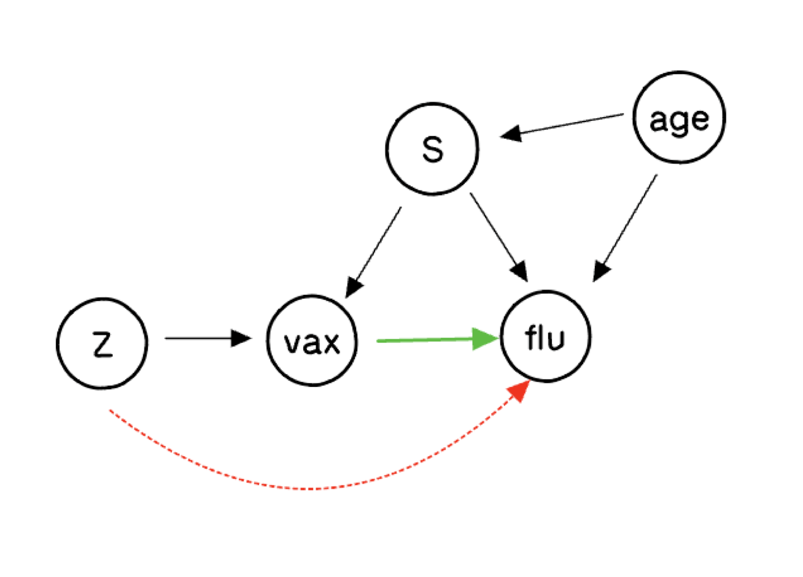
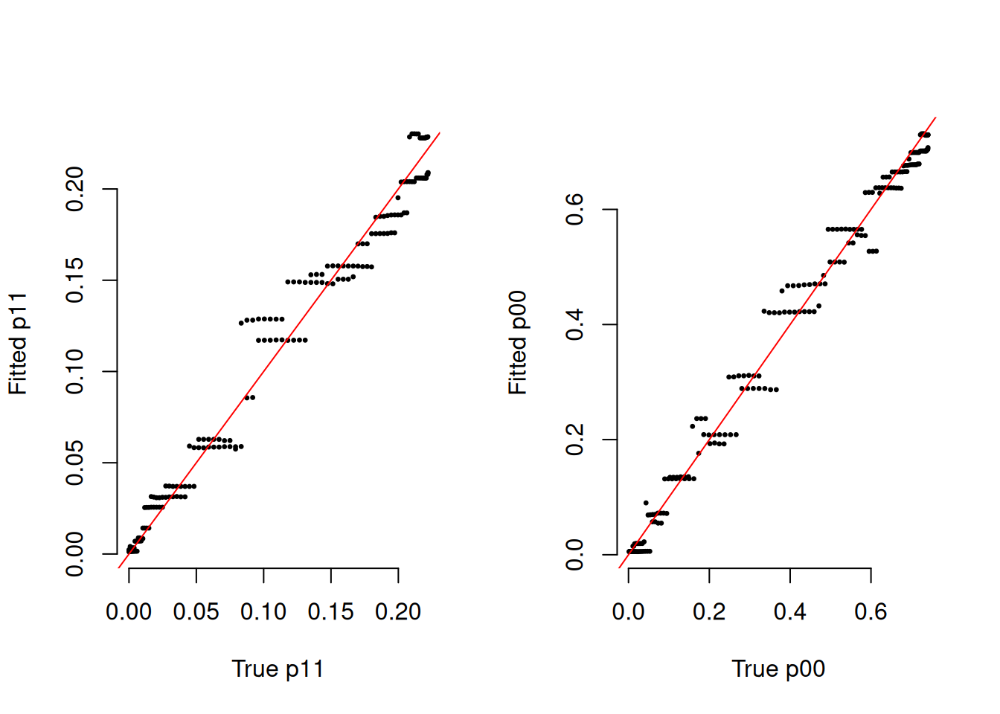
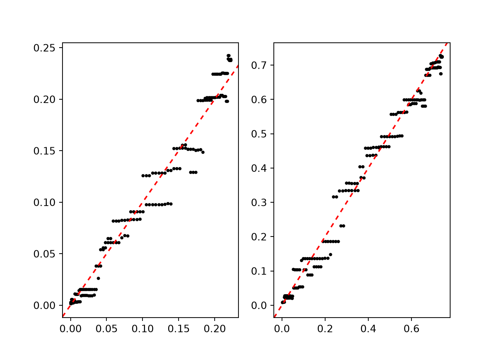
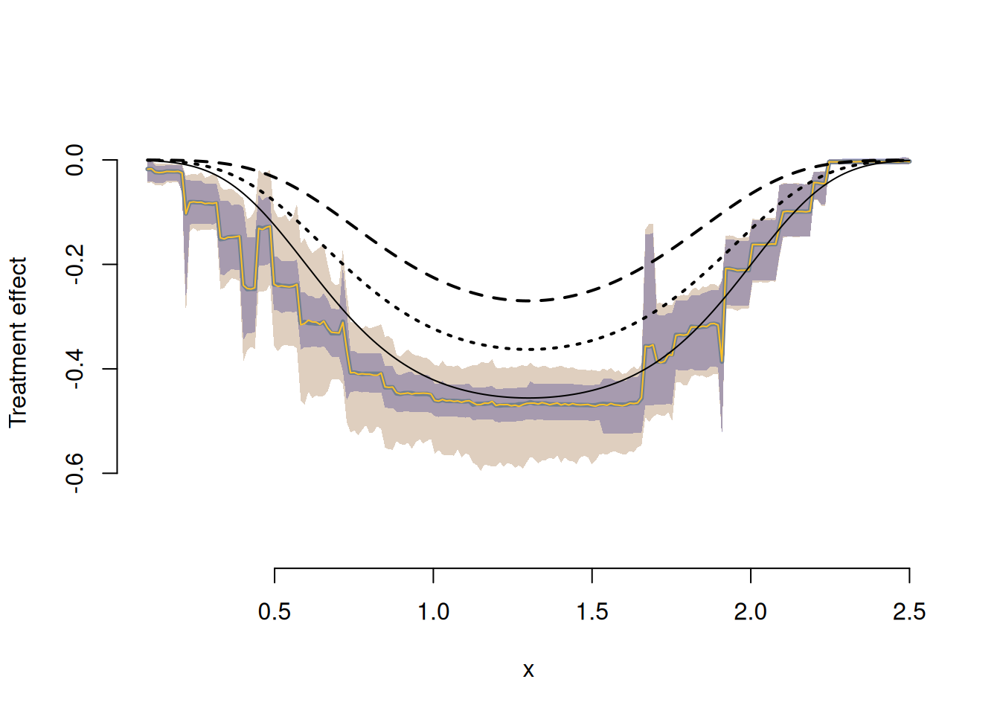
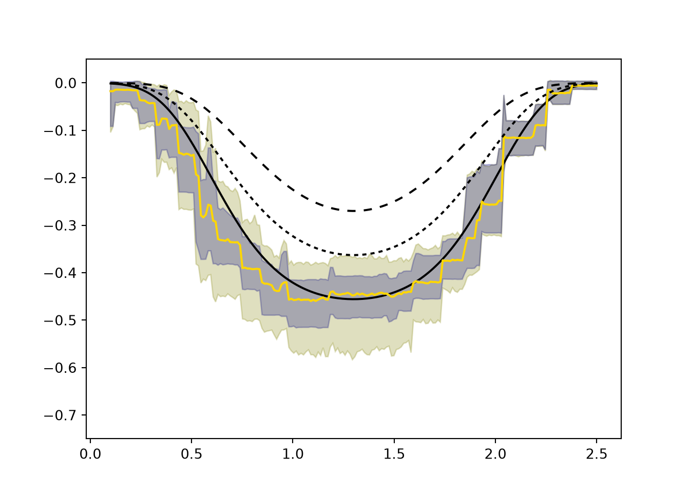

library(stochtree)Instrumental Variables (IV) with StochTree
Introduction
Here we consider a causal inference problem with a binary treatment and a binary outcome where there is unobserved confounding, but an exogenous instrument is available (also binary). This problem requires several extensions to the basic BART model, all of which can be implemented as Gibbs samplers using stochtree. Our analysis follows the Bayesian nonparametric approach described in the supplement to Hahn et al. (2016).
Background
To be concrete, suppose we wish to measure the effect of receiving a flu vaccine on the probability of getting the flu. Individuals who opt to get a flu shot differ in many ways from those that don’t, and these lifestyle differences presumably also affect their respective chances of getting the flu. However, a randomized encouragement design — where some individuals are selected at random to receive extra incentive to get a flu shot — allows us to tease apart the impact of the vaccine from the confounding factors. This exact problem has been studied in McDonald et al. (1992), with follow-on analyses by Hirano et al. (2000), Richardson et al. (2011), and Imbens and Rubin (2015).
Notation
Let \(V\) denote the treatment variable (vaccine). Let \(Y\) denote the response (getting the flu), \(Z\) the instrument (encouragement), and \(X\) an additional observable covariate (patient age).
Let \(S\) denote the principal strata, an exhaustive characterization of how individuals are affected by the encouragement. Some people will get a flu shot no matter what: always takers (\(a\)). Some will not get the shot no matter what: never takers (\(n\)). Compliers (\(c\)) would not have gotten the shot but for the encouragement. We assume no defiers (\(d\)).
The Causal Diagram

The biggest question about this graph concerns the dashed red arrow from the putative instrument \(Z\) to the outcome. If that arrow is present, \(Z\) is not a valid instrument. The assumption that there is no such arrow is the exclusion restriction. We will explore what inferences are possible when we remain agnostic about its presence.
Potential Outcomes
There are six distinct random variables: \(V(0)\), \(V(1)\), \(Y(0,0)\), \(Y(1,0)\), \(Y(0,1)\), and \(Y(1,1)\). The fundamental problem of causal inference is that some of these are never simultaneously observed:
| \(i\) | \(Z_i\) | \(V_i(0)\) | \(V_i(1)\) | \(Y_i(0,0)\) | \(Y_i(1,0)\) | \(Y_i(0,1)\) | \(Y_i(1,1)\) |
|---|---|---|---|---|---|---|---|
| 1 | 1 | ? | 1 | ? | ? | ? | 0 |
| 2 | 0 | 1 | ? | ? | 1 | ? | ? |
| 3 | 0 | 0 | ? | 1 | ? | ? | ? |
| 4 | 1 | ? | 0 | ? | ? | 0 | ? |
| \(\vdots\) | \(\vdots\) | \(\vdots\) | \(\vdots\) | \(\vdots\) | \(\vdots\) | \(\vdots\) | \(\vdots\) |
The principal strata are defined by which potential treatment \(V(z)\) is observed:
| \(V_i(0)\) | \(V_i(1)\) | \(S_i\) |
|---|---|---|
| 0 | 0 | Never Taker (\(n\)) |
| 1 | 1 | Always Taker (\(a\)) |
| 0 | 1 | Complier (\(c\)) |
| 1 | 0 | Defier (\(d\)) |
Estimands and Identification
Let \(\pi_s(x) = \Pr(S=s \mid X=x)\) and \(\gamma_s^{vz}(x) = \Pr(Y(v,z)=1 \mid S=s, X=x)\). The complier conditional average treatment effect \(\gamma_c^{1,z}(x) - \gamma_c^{0,z}(x)\) is our ultimate goal.
Under the monotonicity assumption (\(\pi_d(x) = 0\)), the observed data imply:
\[ \begin{aligned} p_{1 \mid 00}(x) &= \frac{\pi_c(x)}{\pi_c(x)+\pi_n(x)} \gamma_c^{00}(x) + \frac{\pi_n(x)}{\pi_c(x)+\pi_n(x)} \gamma_n^{00}(x) \\ p_{1 \mid 11}(x) &= \frac{\pi_c(x)}{\pi_c(x)+\pi_a(x)} \gamma_c^{11}(x) + \frac{\pi_a(x)}{\pi_c(x)+\pi_a(x)} \gamma_a^{11}(x) \\ p_{1 \mid 01}(x) &= \gamma_n^{01}(x) \\ p_{1 \mid 10}(x) &= \gamma_a^{10}(x) \end{aligned} \]
and the strata probabilities satisfy:
\[ \Pr(V=1 \mid Z=0, X=x) = \pi_a(x), \qquad \Pr(V=1 \mid Z=1, X=x) = \pi_a(x) + \pi_c(x). \]
Under the exclusion restriction, \(\gamma_c^{11}(x)\) and \(\gamma_c^{00}(x)\) are point-identified. Without it, they are partially identified:
\[ \max\!\left(0,\, \frac{\pi_c+\pi_n}{\pi_c} p_{1\mid 00} - \frac{\pi_n}{\pi_c}\right) \leq \gamma_c^{00}(x) \leq \min\!\left(1,\, \frac{\pi_c+\pi_n}{\pi_c} p_{1\mid 00}\right), \]
and analogously for \(\gamma_c^{11}(x)\).
Setup
We load all necessary libraries
import numpy as np
import matplotlib.pyplot as plt
from scipy.stats import norm
from stochtree import (
RNG, Dataset, Forest, ForestContainer,
ForestSampler, Residual, ForestModelConfig, GlobalModelConfig,
)And set a seed for reproducibility
random_seed <- 1234
set.seed(random_seed)random_seed = 1234
rng = np.random.default_rng(random_seed)Data Generation
Data size
n <- 20000n = 20000Generate the Instrument
z <- rbinom(n, 1, 0.5)z = rng.binomial(n=1, p=0.5, size=n)We conceptualize a covariate \(X\) as patient age, drawn from a uniform distribution on \([0, 3]\) (pre-standardized for illustration purposes) and generate the covariate
p_X <- 1
X <- matrix(runif(n * p_X, 0, 3), ncol = p_X)
x <- X[, 1]p_X = 1
X = rng.uniform(low=0., high=3., size=(n, p_X))
x = X[:, 0]We generate principal strata \(S\) from a logistic model in \(X\), parameterized so that the probability of being a never taker decreases with age
alpha_a <- 0; beta_a <- 1
alpha_n <- 1; beta_n <- -1
alpha_c <- 1; beta_c <- 1
pi_s <- function(xval) {
w_a <- exp(alpha_a + beta_a * xval)
w_n <- exp(alpha_n + beta_n * xval)
w_c <- exp(alpha_c + beta_c * xval)
w <- cbind(w_a, w_n, w_c)
w / rowSums(w)
}
s <- sapply(seq_len(n), function(j)
sample(c("a", "n", "c"), 1, prob = pi_s(X[j, 1])))alpha_a = 0; beta_a = 1
alpha_n = 1; beta_n = -1
alpha_c = 1; beta_c = 1
def pi_s(xval, alpha_a, beta_a, alpha_n, beta_n, alpha_c, beta_c):
w = np.column_stack([
np.exp(alpha_a + beta_a * xval),
np.exp(alpha_n + beta_n * xval),
np.exp(alpha_c + beta_c * xval),
])
return w / w.sum(axis=1, keepdims=True)
strata_probs = pi_s(X[:, 0], alpha_a, beta_a, alpha_n, beta_n, alpha_c, beta_c)
s = np.empty(n, dtype=str)
for i in range(n):
s[i] = rng.choice(['a', 'n', 'c'], p=strata_probs[i, :])The treatment \(V\) is generated as a deterministic function of \(S\) and \(Z\) — this is what gives the principal strata their meaning
v <- 1*(s == "a") + 0*(s == "n") + z*(s == "c") + (1-z)*(s == "d")v = 1*(s == 'a') + 0*(s == 'n') + z*(s == "c") + (1-z)*(s == "d")The outcome is generated according to the structural model below. By varying this function we can alter the identification conditions. Setting it to depend on zval violates the exclusion restriction, and we do so here to illustrate partial identification.
gamfun <- function(xval, vval, zval, sval) {
baseline <- pnorm(2 - xval - 2.5*(xval - 1.5)^2 - 0.5*zval
+ 1*(sval == "n") - 1*(sval == "a"))
baseline - 0.5 * vval * baseline
}
y <- rbinom(n, 1, gamfun(X[, 1], v, z, s))def gamfun(xval, vval, zval, sval):
baseline = norm.cdf(2 - xval - 2.5*(xval - 1.5)**2 - 0.5*zval
+ 1*(sval == "n") - 1*(sval == "a"))
return baseline - 0.5 * vval * baseline
y = rng.binomial(n=1, p=gamfun(X[:, 0], v, z, s), size=n)Model Fitting
In order to fit a monotone probit model, the observations must be sorted so that \(Z=1\) cases come first.
Xall <- cbind(X, v, z)
p_X <- p_X + 2
index <- sort(z, decreasing = TRUE, index.return = TRUE)
X <- matrix(X[index$ix, ], ncol = 1)
Xall <- Xall[index$ix, ]
z <- z[index$ix]
v <- v[index$ix]
s <- s[index$ix]
y <- y[index$ix]
x <- x[index$ix]Xall = np.concatenate((X, np.column_stack((v, z))), axis=1)
p_X = p_X + 2
sort_index = np.argsort(z)[::-1]
X = X[sort_index, :]
Xall = Xall[sort_index, :]
z = z[sort_index]
v = v[sort_index]
s = s[sort_index]
y = y[sort_index]
x = x[sort_index]We fit a probit BART model for \(\Pr(Y=1 \mid V=1, Z=1, X=x)\) using the Albert–Chib (Albert and Chib 1993) data augmentation Gibbs sampler. We initialize the forest, enter the main loop (alternating: sample forest | sample latent utilities), and retain all post-warmstart draws.
num_warmstart <- 10
num_mcmc <- 1000
num_samples <- num_warmstart + num_mcmc
alpha <- 0.95; beta <- 2; min_samples_leaf <- 1; max_depth <- 20
num_trees <- 50; cutpoint_grid_size <- 100
tau_init <- 0.5
leaf_prior_scale <- matrix(tau_init, ncol = 1)
feature_types <- as.integer(c(rep(0, p_X - 2), 1, 1))
var_weights <- rep(1, p_X) / p_X
outcome_model_type <- 0
if (is.null(random_seed)) {
rng_r <- createCppRNG(-1)
} else {
rng_r <- createCppRNG(random_seed)
}
forest_dataset <- createForestDataset(Xall)
forest_model_config <- createForestModelConfig(
feature_types = feature_types, num_trees = num_trees,
num_features = p_X, num_observations = n,
variable_weights = var_weights, leaf_dimension = 1,
alpha = alpha, beta = beta, min_samples_leaf = min_samples_leaf,
max_depth = max_depth, leaf_model_type = outcome_model_type,
leaf_model_scale = leaf_prior_scale,
cutpoint_grid_size = cutpoint_grid_size
)
global_model_config <- createGlobalModelConfig(global_error_variance = 1)
forest_model <- createForestModel(forest_dataset, forest_model_config,
global_model_config)
forest_samples <- createForestSamples(num_trees, 1, TRUE, FALSE)
active_forest <- createForest(num_trees, 1, TRUE, FALSE)
n1 <- sum(y)
zed <- 0.25 * (2 * as.numeric(y) - 1)
outcome <- createOutcome(zed)
active_forest$prepare_for_sampler(forest_dataset, outcome, forest_model,
outcome_model_type, 0.0)
active_forest$adjust_residual(forest_dataset, outcome, forest_model,
FALSE, FALSE)
gfr_flag <- TRUE
for (i in seq_len(num_samples)) {
if (i > num_warmstart) gfr_flag <- FALSE
forest_model$sample_one_iteration(
forest_dataset, outcome, forest_samples, active_forest,
rng_r, forest_model_config, global_model_config,
keep_forest = TRUE, gfr = gfr_flag, num_threads = 1
)
eta <- forest_samples$predict_raw_single_forest(forest_dataset, i - 1)
U1 <- runif(n1, pnorm(0, eta[y == 1], 1), 1)
zed[y == 1] <- qnorm(U1, eta[y == 1], 1)
U0 <- runif(n - n1, 0, pnorm(0, eta[y == 0], 1))
zed[y == 0] <- qnorm(U0, eta[y == 0], 1)
outcome$update_data(zed)
forest_model$propagate_residual_update(outcome)
}num_warmstart = 10
num_mcmc = 1000
num_samples = num_warmstart + num_mcmc
alpha = 0.95; beta = 2; min_samples_leaf = 1; max_depth = 20
num_trees = 50; cutpoint_grid_size = 100
tau_init = 0.5
leaf_prior_scale = np.array([[tau_init]])
feature_types = np.append(np.repeat(0, p_X - 2), [1, 1]).astype(int)
var_weights = np.repeat(1.0 / p_X, p_X)
outcome_model_type = 0
cpp_rng = RNG(random_seed) if random_seed is not None else RNG()
forest_dataset = Dataset()
forest_dataset.add_covariates(Xall)
forest_model_config = ForestModelConfig(
feature_types=feature_types, num_trees=num_trees,
num_features=p_X, num_observations=n,
variable_weights=var_weights, leaf_dimension=1,
alpha=alpha, beta=beta, min_samples_leaf=min_samples_leaf,
max_depth=max_depth, leaf_model_type=outcome_model_type,
leaf_model_scale=leaf_prior_scale,
cutpoint_grid_size=cutpoint_grid_size,
)
global_model_config = GlobalModelConfig(global_error_variance=1.0)
forest_sampler = ForestSampler(forest_dataset, global_model_config,
forest_model_config)
forest_samples = ForestContainer(num_trees, 1, True, False)
active_forest = Forest(num_trees, 1, True, False)
n1 = int(np.sum(y))
zed = 0.25 * (2.0 * y - 1.0)
outcome = Residual(zed)
forest_sampler.prepare_for_sampler(forest_dataset, outcome, active_forest,
outcome_model_type, np.array([0.0]))
gfr_flag = True
for i in range(num_samples):
if i >= num_warmstart:
gfr_flag = False
forest_sampler.sample_one_iteration(
forest_samples, active_forest, forest_dataset, outcome, cpp_rng,
global_model_config, forest_model_config,
keep_forest=True, gfr=gfr_flag, num_threads=1,
)
eta = np.squeeze(forest_samples.predict_raw_single_forest(forest_dataset, i))
mu0 = eta[y == 0]; mu1 = eta[y == 1]
u0 = rng.uniform(0, norm.cdf(-mu0), size=n - n1)
u1 = rng.uniform(norm.cdf(-mu1), 1, size=n1)
zed[y == 0] = mu0 + norm.ppf(u0)
zed[y == 1] = mu1 + norm.ppf(u1)
outcome.update_data(np.squeeze(zed) - eta)The monotonicity constraint \(\Pr(V=1 \mid Z=0, X=x) \leq \Pr(V=1 \mid Z=1, X=x)\) is enforced via the data augmentation of Papakostas et al. (2023). We parameterize
\[ \Pr(V=1 \mid Z=0, X=x) = \Phi_f(x)\,\Phi_h(x), \qquad \Pr(V=1 \mid Z=1, X=x) = \Phi_f(x), \]
where \(\Phi_\mu(x)\) is the normal CDF with mean \(\mu(x)\) and variance 1.
X_h <- as.matrix(X[z == 0, ])
n0 <- sum(z == 0); n1 <- sum(z == 1)
num_trees_f <- 50; num_trees_h <- 20
feature_types_mono <- as.integer(rep(0, 1))
var_weights_mono <- rep(1, 1)
tau_h <- 1 / num_trees_h
leaf_scale_h <- matrix(tau_h, ncol = 1)
leaf_scale_f <- matrix(1 / num_trees_f, ncol = 1)
forest_dataset_f <- createForestDataset(X)
forest_dataset_h <- createForestDataset(X_h)
fmc_f <- createForestModelConfig(
feature_types = feature_types_mono, num_trees = num_trees_f,
num_features = ncol(X), num_observations = nrow(X),
variable_weights = var_weights_mono, leaf_dimension = 1,
alpha = alpha, beta = beta, min_samples_leaf = min_samples_leaf,
max_depth = max_depth, leaf_model_type = 0,
leaf_model_scale = leaf_scale_f, cutpoint_grid_size = cutpoint_grid_size
)
fmc_h <- createForestModelConfig(
feature_types = feature_types_mono, num_trees = num_trees_h,
num_features = ncol(X_h), num_observations = nrow(X_h),
variable_weights = var_weights_mono, leaf_dimension = 1,
alpha = alpha, beta = beta, min_samples_leaf = min_samples_leaf,
max_depth = max_depth, leaf_model_type = 0,
leaf_model_scale = leaf_scale_h, cutpoint_grid_size = cutpoint_grid_size
)
gmc_mono <- createGlobalModelConfig(global_error_variance = 1)
fm_f <- createForestModel(forest_dataset_f, fmc_f, gmc_mono)
fm_h <- createForestModel(forest_dataset_h, fmc_h, gmc_mono)
fs_f <- createForestSamples(num_trees_f, 1, TRUE)
fs_h <- createForestSamples(num_trees_h, 1, TRUE)
af_f <- createForest(num_trees_f, 1, TRUE)
af_h <- createForest(num_trees_h, 1, TRUE)
v1 <- v[z == 1]; v0 <- v[z == 0]
R1 <- rep(NA, n0); R0 <- rep(NA, n0)
R1[v0 == 1] <- 1; R0[v0 == 1] <- 1
R1[v0 == 0] <- 0; R0[v0 == 0] <- sample(c(0, 1), sum(v0 == 0), replace = TRUE)
vaug <- c(v1, R1)
z_f <- (2 * as.numeric(vaug) - 1); z_f <- z_f / sd(z_f)
z_h <- (2 * as.numeric(R0) - 1); z_h <- z_h / sd(z_h)
out_f <- createOutcome(z_f); out_h <- createOutcome(z_h)
af_f$prepare_for_sampler(forest_dataset_f, out_f, fm_f, 0, 0.0)
af_h$prepare_for_sampler(forest_dataset_h, out_h, fm_h, 0, 0.0)
af_f$adjust_residual(forest_dataset_f, out_f, fm_f, FALSE, FALSE)
af_h$adjust_residual(forest_dataset_h, out_h, fm_h, FALSE, FALSE)
gfr_flag <- TRUE
for (i in seq_len(num_samples)) {
if (i > num_warmstart) gfr_flag <- FALSE
fm_f$sample_one_iteration(forest_dataset_f, out_f, fs_f, af_f,
rng_r, fmc_f, gmc_mono, keep_forest = TRUE, gfr = gfr_flag, num_threads = 1)
fm_h$sample_one_iteration(forest_dataset_h, out_h, fs_h, af_h,
rng_r, fmc_h, gmc_mono, keep_forest = TRUE, gfr = gfr_flag, num_threads = 1)
eta_f <- fs_f$predict_raw_single_forest(forest_dataset_f, i - 1)
eta_h <- fs_h$predict_raw_single_forest(forest_dataset_h, i - 1)
idx0 <- which(v0 == 0)
w1 <- (1 - pnorm(eta_h[idx0])) * (1 - pnorm(eta_f[n1 + idx0]))
w2 <- (1 - pnorm(eta_h[idx0])) * pnorm(eta_f[n1 + idx0])
w3 <- pnorm(eta_h[idx0]) * (1 - pnorm(eta_f[n1 + idx0]))
s_w <- w1 + w2 + w3
u <- runif(length(idx0))
temp <- 1*(u < w1/s_w) + 2*(u > w1/s_w & u < (w1+w2)/s_w) + 3*(u > (w1+w2)/s_w)
R1[v0 == 0] <- 1*(temp == 2); R0[v0 == 0] <- 1*(temp == 3)
vaug <- c(v1, R1)
U1 <- runif(sum(R0), pnorm(0, eta_h[R0 == 1], 1), 1)
z_h[R0 == 1] <- qnorm(U1, eta_h[R0 == 1], 1)
U0 <- runif(n0 - sum(R0), 0, pnorm(0, eta_h[R0 == 0], 1))
z_h[R0 == 0] <- qnorm(U0, eta_h[R0 == 0], 1)
U1 <- runif(sum(vaug), pnorm(0, eta_f[vaug == 1], 1), 1)
z_f[vaug == 1] <- qnorm(U1, eta_f[vaug == 1], 1)
U0 <- runif(n - sum(vaug), 0, pnorm(0, eta_f[vaug == 0], 1))
z_f[vaug == 0] <- qnorm(U0, eta_f[vaug == 0], 1)
out_h$update_data(z_h); fm_h$propagate_residual_update(out_h)
out_f$update_data(z_f); fm_f$propagate_residual_update(out_f)
}X_h = X[z == 0, :]
n0 = int(np.sum(z == 0)); n1 = int(np.sum(z == 1))
num_trees_f = 50; num_trees_h = 20
feature_types_mono = np.repeat(0, p_X - 2).astype(int)
var_weights_mono = np.repeat(1.0 / (p_X - 2.0), p_X - 2)
leaf_scale_f = np.array([[1.0 / num_trees_f]])
leaf_scale_h = np.array([[1.0 / num_trees_h]])
forest_dataset_f = Dataset(); forest_dataset_f.add_covariates(X)
forest_dataset_h = Dataset(); forest_dataset_h.add_covariates(X_h)
fmc_f = ForestModelConfig(
feature_types=feature_types_mono, num_trees=num_trees_f,
num_features=X.shape[1], num_observations=n,
variable_weights=var_weights_mono, leaf_dimension=1,
alpha=alpha, beta=beta, min_samples_leaf=min_samples_leaf,
max_depth=max_depth, leaf_model_type=0,
leaf_model_scale=leaf_scale_f, cutpoint_grid_size=cutpoint_grid_size,
)
fmc_h = ForestModelConfig(
feature_types=feature_types_mono, num_trees=num_trees_h,
num_features=X_h.shape[1], num_observations=n0,
variable_weights=var_weights_mono, leaf_dimension=1,
alpha=alpha, beta=beta, min_samples_leaf=min_samples_leaf,
max_depth=max_depth, leaf_model_type=0,
leaf_model_scale=leaf_scale_h, cutpoint_grid_size=cutpoint_grid_size,
)
gmc_mono = GlobalModelConfig(global_error_variance=1.0)
fs_f = ForestSampler(forest_dataset_f, gmc_mono, fmc_f)
fs_h = ForestSampler(forest_dataset_h, gmc_mono, fmc_h)
forest_samples_f = ForestContainer(num_trees_f, 1, True, False)
forest_samples_h = ForestContainer(num_trees_h, 1, True, False)
af_f = Forest(num_trees_f, 1, True, False)
af_h = Forest(num_trees_h, 1, True, False)
v1 = v[z == 1]; v0 = v[z == 0]
R1 = np.empty(n0); R0 = np.empty(n0)
R1[v0 == 1] = 1; R0[v0 == 1] = 1
nv0 = int(np.sum(v0 == 0))
R1[v0 == 0] = 0; R0[v0 == 0] = rng.choice([0, 1], size=nv0)
vaug = np.append(v1, R1)
z_f = (2.0 * vaug - 1.0); z_f = z_f / np.std(z_f)
z_h = (2.0 * R0 - 1.0); z_h = z_h / np.std(z_h)
out_f = Residual(z_f); out_h = Residual(z_h)
fs_f.prepare_for_sampler(forest_dataset_f, out_f, af_f, 0, np.array([0.0]))
fs_h.prepare_for_sampler(forest_dataset_h, out_h, af_h, 0, np.array([0.0]))
gfr_flag = True
for i in range(num_samples):
if i >= num_warmstart:
gfr_flag = False
fs_f.sample_one_iteration(forest_samples_f, af_f, forest_dataset_f, out_f,
cpp_rng, gmc_mono, fmc_f, keep_forest=True, gfr=gfr_flag, num_threads=1)
fs_h.sample_one_iteration(forest_samples_h, af_h, forest_dataset_h, out_h,
cpp_rng, gmc_mono, fmc_h, keep_forest=True, gfr=gfr_flag, num_threads=1)
eta_f = np.squeeze(forest_samples_f.predict_raw_single_forest(forest_dataset_f, i))
eta_h = np.squeeze(forest_samples_h.predict_raw_single_forest(forest_dataset_h, i))
idx0 = np.where(v0 == 0)[0]
w1 = (1 - norm.cdf(eta_h[idx0])) * (1 - norm.cdf(eta_f[n1 + idx0]))
w2 = (1 - norm.cdf(eta_h[idx0])) * norm.cdf(eta_f[n1 + idx0])
w3 = norm.cdf(eta_h[idx0]) * (1 - norm.cdf(eta_f[n1 + idx0]))
s_w = w1 + w2 + w3
u = rng.uniform(size=len(idx0))
temp = 1*(u < w1/s_w) + 2*((u > w1/s_w) & (u < (w1+w2)/s_w)) + 3*(u > (w1+w2)/s_w)
R1[v0 == 0] = (temp == 2).astype(float)
R0[v0 == 0] = (temp == 3).astype(float)
vaug = np.append(v1, R1)
mu1 = eta_h[R0 == 1]
z_h[R0 == 1] = mu1 + norm.ppf(rng.uniform(norm.cdf(-mu1), 1, size=int(np.sum(R0))))
mu0 = eta_h[R0 == 0]
z_h[R0 == 0] = mu0 + norm.ppf(rng.uniform(0, norm.cdf(-mu0), size=n0 - int(np.sum(R0))))
mu1 = eta_f[vaug == 1]
z_f[vaug == 1] = mu1 + norm.ppf(rng.uniform(norm.cdf(-mu1), 1, size=int(np.sum(vaug))))
mu0 = eta_f[vaug == 0]
z_f[vaug == 0] = mu0 + norm.ppf(rng.uniform(0, norm.cdf(-mu0), size=n - int(np.sum(vaug))))
out_h.update_data(np.squeeze(z_h) - eta_h)
out_f.update_data(np.squeeze(z_f) - eta_f)Extracting Estimates and Plotting
We compute the true \(ITT_c\) and LATE functions on a prediction grid, then extract posterior predictions and plot credible bands.
Prediction Grid and Truth
ngrid <- 200
xgrid <- seq(0.1, 2.5, length.out = ngrid)
X_11 <- cbind(xgrid, rep(1, ngrid), rep(1, ngrid))
X_00 <- cbind(xgrid, rep(0, ngrid), rep(0, ngrid))
X_01 <- cbind(xgrid, rep(0, ngrid), rep(1, ngrid))
X_10 <- cbind(xgrid, rep(1, ngrid), rep(0, ngrid))
pi_strat <- pi_s(xgrid)
w_a <- pi_strat[, 1]; w_n <- pi_strat[, 2]; w_c <- pi_strat[, 3]
p11_true <- (w_c/(w_a+w_c))*gamfun(xgrid,1,1,"c") + (w_a/(w_a+w_c))*gamfun(xgrid,1,1,"a")
p00_true <- (w_c/(w_n+w_c))*gamfun(xgrid,0,0,"c") + (w_n/(w_n+w_c))*gamfun(xgrid,0,0,"n")
itt_c_true <- gamfun(xgrid, 1, 1, "c") - gamfun(xgrid, 0, 0, "c")
LATE_true0 <- gamfun(xgrid, 1, 0, "c") - gamfun(xgrid, 0, 0, "c")
LATE_true1 <- gamfun(xgrid, 1, 1, "c") - gamfun(xgrid, 0, 1, "c")ngrid = 200
xgrid = np.linspace(0.1, 2.5, ngrid)
X_11 = np.column_stack((xgrid, np.ones(ngrid), np.ones(ngrid)))
X_00 = np.column_stack((xgrid, np.zeros(ngrid), np.zeros(ngrid)))
X_01 = np.column_stack((xgrid, np.zeros(ngrid), np.ones(ngrid)))
X_10 = np.column_stack((xgrid, np.ones(ngrid), np.zeros(ngrid)))
pi_strat = pi_s(xgrid, alpha_a, beta_a, alpha_n, beta_n, alpha_c, beta_c)
w_a = pi_strat[:, 0]; w_n = pi_strat[:, 1]; w_c = pi_strat[:, 2]
p11_true = (w_c/(w_a+w_c))*gamfun(xgrid,1,1,"c") + (w_a/(w_a+w_c))*gamfun(xgrid,1,1,"a")
p00_true = (w_c/(w_n+w_c))*gamfun(xgrid,0,0,"c") + (w_n/(w_n+w_c))*gamfun(xgrid,0,0,"n")
itt_c_true = gamfun(xgrid, 1, 1, "c") - gamfun(xgrid, 0, 0, "c")
LATE_true0 = gamfun(xgrid, 1, 0, "c") - gamfun(xgrid, 0, 0, "c")
LATE_true1 = gamfun(xgrid, 1, 1, "c") - gamfun(xgrid, 0, 1, "c")Extract Posterior Predictions
fd_grid <- createForestDataset(as.matrix(xgrid))
fd_11 <- createForestDataset(X_11)
fd_00 <- createForestDataset(X_00)
fd_01 <- createForestDataset(X_01)
fd_10 <- createForestDataset(X_10)
phat_11 <- pnorm(forest_samples$predict(fd_11))
phat_00 <- pnorm(forest_samples$predict(fd_00))
phat_01 <- pnorm(forest_samples$predict(fd_01))
phat_10 <- pnorm(forest_samples$predict(fd_10))
phat_ac <- pnorm(fs_f$predict(fd_grid))
phat_a <- phat_ac * pnorm(fs_h$predict(fd_grid))
phat_c <- phat_ac - phat_a
phat_n <- 1 - phat_acdef make_dataset(mat):
ds = Dataset()
ds.add_covariates(mat)
return ds
fd_grid = make_dataset(np.expand_dims(xgrid, 1))
fd_11 = make_dataset(X_11); fd_00 = make_dataset(X_00)
fd_01 = make_dataset(X_01); fd_10 = make_dataset(X_10)
phat_11 = norm.cdf(forest_samples.predict(fd_11))
phat_00 = norm.cdf(forest_samples.predict(fd_00))
phat_01 = norm.cdf(forest_samples.predict(fd_01))
phat_10 = norm.cdf(forest_samples.predict(fd_10))
phat_ac = norm.cdf(forest_samples_f.predict(fd_grid))
phat_a = phat_ac * norm.cdf(forest_samples_h.predict(fd_grid))
phat_c = phat_ac - phat_a
phat_n = 1 - phat_acModel Fit Diagnostics
par(mfrow = c(1, 2))
plot(p11_true, rowMeans(phat_11), pch = 20, cex = 0.5, bty = "n",
xlab = "True p11", ylab = "Fitted p11")
abline(0, 1, col = "red")
plot(p00_true, rowMeans(phat_00), pch = 20, cex = 0.5, bty = "n",
xlab = "True p00", ylab = "Fitted p00")
abline(0, 1, col = "red")
fig, (ax1, ax2) = plt.subplots(1, 2)
ax1.scatter(p11_true, np.mean(phat_11, axis=1), color="black", s=5)
ax1.axline((0, 0), slope=1, color="red", linestyle=(0, (3, 3)))
ax2.scatter(p00_true, np.mean(phat_00, axis=1), color="black", s=5)
ax2.axline((0, 0), slope=1, color="red", linestyle=(0, (3, 3)))
plt.show()
Construct and Plot the \(ITT_c\)
We center the posterior on the identified interval at the value implied by a valid exclusion restriction, then construct credible bands for the \(ITT_c\) and compare to the LATE.
ss <- 6
itt_c <- late <- matrix(NA, ngrid, ncol(phat_c))
for (j in seq_len(ncol(phat_c))) {
gamest11 <- ((phat_a[,j]+phat_c[,j])/phat_c[,j])*phat_11[,j] -
phat_10[,j]*phat_a[,j]/phat_c[,j]
lower11 <- pmax(0, ((phat_a[,j]+phat_c[,j])/phat_c[,j])*phat_11[,j] -
phat_a[,j]/phat_c[,j])
upper11 <- pmin(1, ((phat_a[,j]+phat_c[,j])/phat_c[,j])*phat_11[,j])
m11 <- (gamest11 - lower11)/(upper11 - lower11)
a1 <- ss*m11; b1 <- ss*(1 - m11)
a1[m11 < 0] <- 1; b1[m11 < 0] <- 5
a1[m11 > 1] <- 5; b1[m11 > 1] <- 1
gamest00 <- ((phat_n[,j]+phat_c[,j])/phat_c[,j])*phat_00[,j] -
phat_01[,j]*phat_n[,j]/phat_c[,j]
lower00 <- pmax(0, ((phat_n[,j]+phat_c[,j])/phat_c[,j])*phat_00[,j] -
phat_n[,j]/phat_c[,j])
upper00 <- pmin(1, ((phat_n[,j]+phat_c[,j])/phat_c[,j])*phat_00[,j])
m00 <- (gamest00 - lower00)/(upper00 - lower00)
a0 <- ss*m00; b0 <- ss*(1 - m00)
a0[m00 < 0] <- 1; b0[m00 < 0] <- 5
a0[m00 > 1] <- 5; b0[m00 > 1] <- 1
itt_c[,j] <- lower11 + (upper11-lower11)*rbeta(ngrid, a1, b1) -
(lower00 + (upper00-lower00)*rbeta(ngrid, a0, b0))
late[,j] <- gamest11 - gamest00
}
upperq <- apply(itt_c, 1, quantile, 0.975)
lowerq <- apply(itt_c, 1, quantile, 0.025)
upperq_er <- apply(late, 1, quantile, 0.975, na.rm = TRUE)
lowerq_er <- apply(late, 1, quantile, 0.025, na.rm = TRUE)
plot(xgrid, itt_c_true, type = "n", ylim = c(-0.75, 0.05), bty = "n",
xlab = "x", ylab = "Treatment effect")
polygon(c(xgrid, rev(xgrid)), c(lowerq, rev(upperq)),
col = rgb(0.5, 0.25, 0, 0.25), border = FALSE)
polygon(c(xgrid, rev(xgrid)), c(lowerq_er, rev(upperq_er)),
col = rgb(0, 0, 0.5, 0.25), border = FALSE)
lines(xgrid, rowMeans(late), col = "slategray", lwd = 3)
lines(xgrid, rowMeans(itt_c), col = "goldenrod1", lwd = 1)
lines(xgrid, LATE_true0, col = "black", lwd = 2, lty = 3)
lines(xgrid, LATE_true1, col = "black", lwd = 2, lty = 2)
lines(xgrid, itt_c_true, col = "black", lwd = 1)
ss = 6
itt_c = np.empty((ngrid, phat_c.shape[1]))
late = np.empty((ngrid, phat_c.shape[1]))
for j in range(phat_c.shape[1]):
gamest11 = ((phat_a[:,j]+phat_c[:,j])/phat_c[:,j])*phat_11[:,j] - \
phat_10[:,j]*phat_a[:,j]/phat_c[:,j]
lower11 = np.maximum(0., ((phat_a[:,j]+phat_c[:,j])/phat_c[:,j])*phat_11[:,j] -
phat_a[:,j]/phat_c[:,j])
upper11 = np.minimum(1., ((phat_a[:,j]+phat_c[:,j])/phat_c[:,j])*phat_11[:,j])
m11 = (gamest11 - lower11) / (upper11 - lower11)
a1 = ss * m11; b1 = ss * (1 - m11)
a1[m11 < 0] = 1; b1[m11 < 0] = 5
a1[m11 > 1] = 5; b1[m11 > 1] = 1
gamest00 = ((phat_n[:,j]+phat_c[:,j])/phat_c[:,j])*phat_00[:,j] - \
phat_01[:,j]*phat_n[:,j]/phat_c[:,j]
lower00 = np.maximum(0., ((phat_n[:,j]+phat_c[:,j])/phat_c[:,j])*phat_00[:,j] -
phat_n[:,j]/phat_c[:,j])
upper00 = np.minimum(1., ((phat_n[:,j]+phat_c[:,j])/phat_c[:,j])*phat_00[:,j])
m00 = (gamest00 - lower00) / (upper00 - lower00)
a0 = ss * m00; b0 = ss * (1 - m00)
a0[m00 < 0] = 1; b0[m00 < 0] = 5
a0[m00 > 1] = 5; b0[m00 > 1] = 1
itt_c[:, j] = lower11 + (upper11-lower11)*rng.beta(a1, b1, ngrid) - \
(lower00 + (upper00-lower00)*rng.beta(a0, b0, ngrid))
late[:, j] = gamest11 - gamest00
upperq = np.quantile(itt_c, 0.975, axis=1)
lowerq = np.quantile(itt_c, 0.025, axis=1)
upperq_er = np.quantile(late, 0.975, axis=1)
lowerq_er = np.quantile(late, 0.025, axis=1)
plt.plot(xgrid, itt_c_true, color="black")
plt.ylim(-0.75, 0.05)(-0.75, 0.05)plt.fill(np.append(xgrid, xgrid[::-1]), np.append(lowerq, upperq[::-1]),
color=(0.5, 0.5, 0, 0.25))
plt.fill(np.append(xgrid, xgrid[::-1]), np.append(lowerq_er, upperq_er[::-1]),
color=(0, 0, 0.5, 0.25))
plt.plot(xgrid, np.mean(late, axis=1), color="darkgrey")
plt.plot(xgrid, np.mean(itt_c, axis=1), color="gold")
plt.plot(xgrid, LATE_true0, color="black", linestyle=(0, (2, 2)))
plt.plot(xgrid, LATE_true1, color="black", linestyle=(0, (4, 4)))
plt.show()
With a valid exclusion restriction the three black curves would all be identical. Without it, the direct effect of \(Z\) on \(Y\) causes them to diverge. Specifically, the \(ITT_c\) (gold) compares getting the vaccine and the reminder to not getting either — when both reduce risk, we see a larger overall reduction. The two LATE effects compare the isolated impact of the vaccine among those who did and did not receive the reminder, respectively.
References
Albert, James H, and Siddhartha Chib. 1993. “Bayesian Analysis of Binary and Polychotomous Response Data.” Journal of the American Statistical Association 88 (422): 669–79.
Hahn, P Richard, Jared S Murray, and Ioanna Manolopoulou. 2016. “A Bayesian Partial Identification Approach to Inferring the Prevalence of Accounting Misconduct.” Journal of the American Statistical Association 111 (513): 14–26.
Hirano, Keisuke, Guido W. Imbens, Donald B. Rubin, and Xiao-Hua Zhou. 2000. “Assessing the Effect of an Influenza Vaccine in an Encouragement Design.” Biostatistics 1 (1): 69–88. https://doi.org/10.1093/biostatistics/1.1.69.
Imbens, Guido W, and Donald B Rubin. 2015. Causal Inference in Statistics, Social, and Biomedical Sciences. Cambridge university press.
McDonald, Clement J, Siu L Hui, and William M Tierney. 1992. “Effects of Computer Reminders for Influenza Vaccination on Morbidity During Influenza Epidemics.” MD Computing: Computers in Medical Practice 9 (5): 304–12.
Papakostas, Demetrios, P Richard Hahn, Jared Murray, Frank Zhou, and Joseph Gerakos. 2023. “Do Forecasts of Bankruptcy Cause Bankruptcy? A Machine Learning Sensitivity Analysis.” The Annals of Applied Statistics 17 (1): 711–39.
Richardson, Thomas S., Robin J. Evans, and James M. Robins. 2011. “Transparent Parametrizations of Models for Potential Outcomes.” In Bayesian Statistics 9. Oxford University Press. https://doi.org/10.1093/acprof:oso/9780199694587.003.0019.